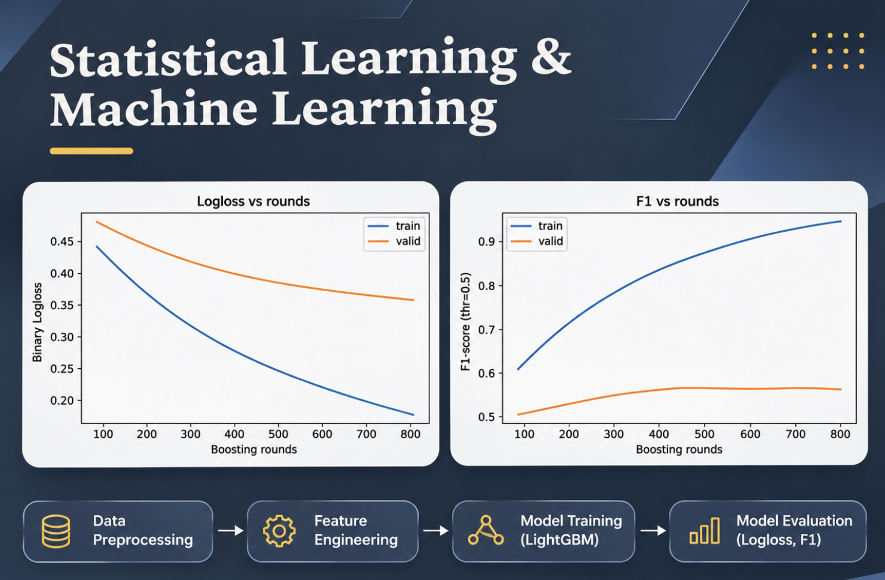

P02 / Two course projects
Statistical Learning Projects
Built workflows for product-price prediction and job–talent classification, comparing text features, models, and decision thresholds while considering predictive performance and computational cost.

Statistical Learning Projects | Cover
01
Overview
These course projects address two text-based prediction tasks. Price prediction focuses on normalization, long-tailed prices, and computational limits. Job matching combines text and structured data to examine how class imbalance, features, and thresholds affect F1.
02
Job–talent matching
I combined TF-IDF features from job and candidate text with categorical encoding, missing-value handling, and handcrafted matching features. I compared Logistic Regression and LightGBM, adjusted positive-class weights, and searched decision thresholds, evaluating precision, recall, and F1 together.
The report records validation F1 improving from approximately 0.29 to 0.57 across feature and configuration changes. Its final comparison lists LightGBM F1 at 0.5696, precision at 0.5870, and recall at 0.5531, versus Logistic Regression F1 of 0.4592. These are reported validation results; training and generalization checks were not repeated for this portfolio.
Training F1 continued rising while validation F1 leveled off, showing why training performance alone is insufficient. Further work should preserve an independent test set, check for leakage, and document which data were used to select thresholds.
03
Product-price prediction
I normalized character width, case, and units in product names, then combined character n-grams, HashingVectorizer, and numeric features such as string length with Ridge Regression. A log transformation handled the price target, and five-fold cross-validation evaluated SMAPE.
The report records a mean SMAPE of 39.04 on its stated scale for Hashing + Ridge. Model selection considered more than error: alternatives with more expensive text features required longer runs, so I retained a workflow suited to the course’s computational constraints. The result applies to that dataset and configuration, not to all product categories.
Classification model comparison
| Model | Precision | Recall | F1 |
|---|---|---|---|
| LightGBM | 0.5870 | 0.5531 | 0.5696 |
| Logistic Regression | — | — | 0.4592 |
SELECTED EVIDENCE